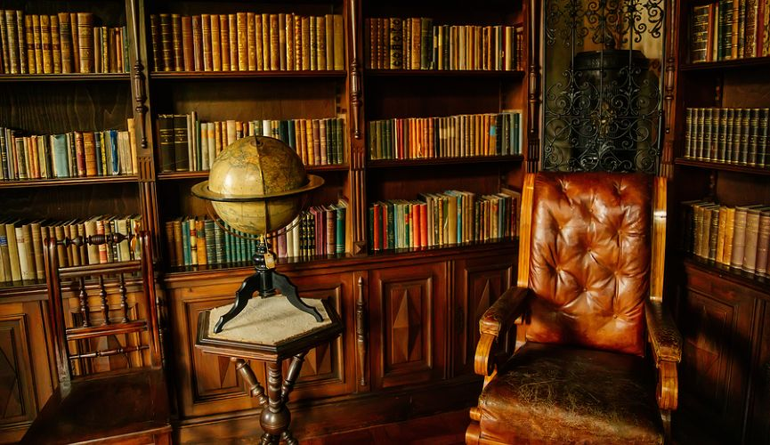

Blessed are the Legend Makers
Reading
Hannah is an avid reader. Reading at high grade levels since elementary school, she was once grounded from the library for reading too much. She has read an impressive variety of books, from The Odyssey and The Iliad, to Shakespeare’s Macbeth, to the entire NIV Bible and the Heidelberg Catechism. She has also read works from C.S. Lewis, John Piper, A. W. Tozer, and Francis Schaeffer.

Hannah is curating her personal library, which has already passed 100 books. Consisting of 115 works of fiction and 34 nonfiction works, her collection now officially qualifies as a personal library, according to the American Library Association. Her biggest library goal is to reach 1000 books, which qualifies as a full-fledged library. Her book list now includes works such as The Art of War by Sun Tzu, the entire collection of Agatha Christie’s Poirot, and Dr. Jordan Peterson’s 12 Rules for Life: An Antidote to Chaos.
Hannah’s preferred genres are Classics and Mystery, such as Jane Austen’s Pride and Prejudice, Charles Dickens’ Bleak House, Sir Arthur Conan Doyle’s Sherlock Holmes, and Dorothy L. Sayers’ Lord Peter Whimsey mysteries.
Hannah's Favorites
- The Lord of the Rings- J.R.R. Tolkien
- Whose Body- Dorothy L. Sayers
- Murder in the Mews- Agatha Christie
- The Incorrigible Children of Ashton Place- Maryrose Wood
- Friday Night at Hodges' Cafe- Tim Egan
- Manalive- G.K. Chesterton